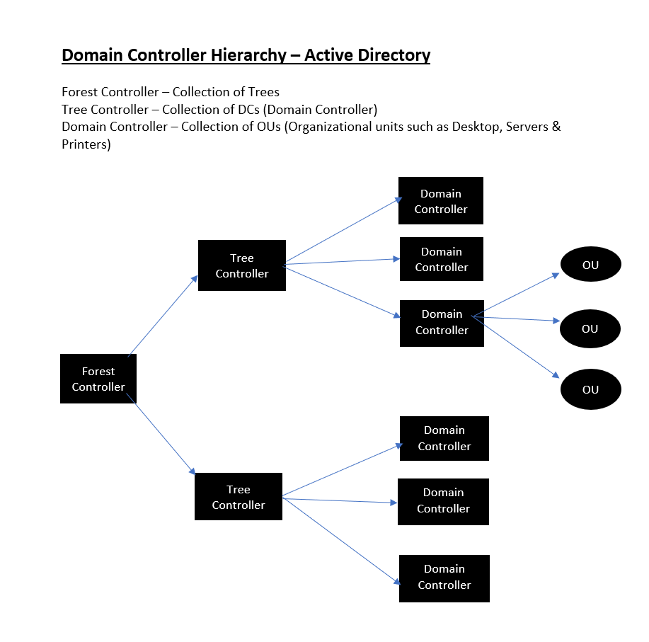
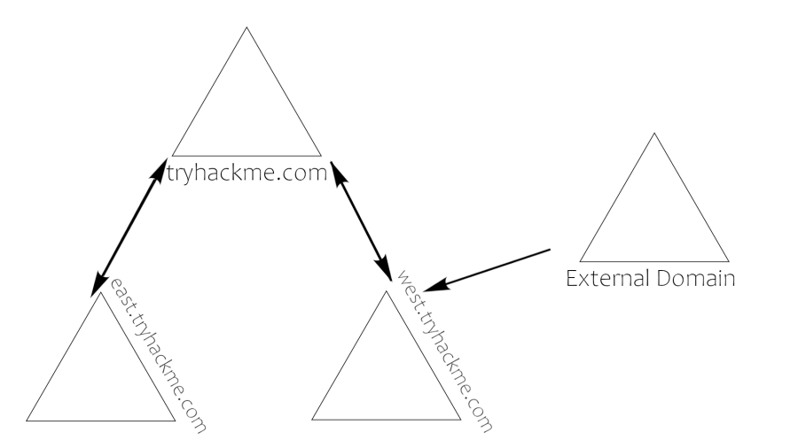
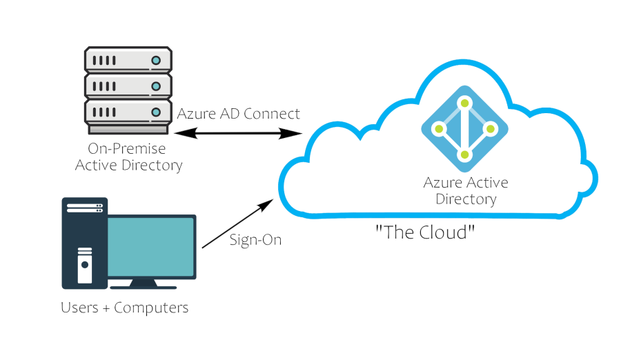

Concepts
Basics
What is Active Directory? Active Directory is a collection of machines and servers connected inside of domains, that are a collective part of a bigger forest of domains, that make up the Active Directory network. Active Directory contains many functioning bits and pieces, a majority of which we will be covering in the upcoming tasks. To outline what we'll be covering take a look over this list of Active Directory components and become familiar with the various pieces of Active Directory:
Domain Controllers
Forests, Trees, Domains
Users + Groups
Trusts
Policies
Domain Services
All of these parts of Active Directory come together to make a big network of machines and servers. Now that we know what Active Directory is let's talk about the why?
Why use Active Directory?The majority of large companies use Active Directory because it allows for the control and monitoring of their user's computers through a single domain controller. It allows a single user to sign in to any computer on the active directory network and have access to his or her stored files and folders in the server, as well as the local storage on that machine. This allows for any user in the company to use any machine that the company owns, without having to set up multiple users on a machine. Active Directory does it all for you.
Physical Active Directory:The physical Active Directory is the servers and machines on-premise, these can be anything from domain controllers and storage servers to domain user machines; everything needed for an Active Directory environment besides the software.
Domain Controllers:A domain controller is a Windows server that has Active Directory Domain Services (AD DS)
installed and has been
promoted to a domain controller in the forest. Domain controllers are the center of Active Directory -- they control the rest of the domain. I will outline the tasks of a domain controller below:
holds the AD DS data store
handles authentication and authorization services
replicate updates from other domain controllers in the forest
Allows admin access to manage domain resource
AD DS Data Store The Active Directory Data Store holds the databases and processes needed to store and manage directory information such as users, groups, and services. Below is an outline of some of the contents and characteristics of the AD DS Data Store:
▸ Contains the NTDS.dit - a database that contains all of the information of an Active Directory domain controller as well as password hashes for domain users
▸ Stored by default in %SystemRoot%\NTDS
▸ accessible only by the domain controller
That is everything that you need to know in terms of physical and on-premise Active Directory. Now move on to learn about the software and infrastructure behind the network.
Forest Controller The forest is what defines everything; it is the container that holds all of the other bits and pieces of the network together -- without the forest all of the other trees and domains would not be able to interact. The one thing to note when thinking of the forest is to not think of it too literally -- it is a physical thing just as much as it is a figurative thing. When we say "forest", it is only a way of describing the connection created between these trees and domains by the network.
Forest OverviewA forest is a collection of one or more domain trees inside of an Active Directory network. It is what categorizes the parts of the network as a whole.
The Forest consists of these parts which we will go into farther detail with later:
▸ Trees - A hierarchy of domains in Active Directory Domain Services
▸ Domains - Used to group and manage objects
▸ Organizational Units (OUs) - Containers for groups, computers, users, printers and other OUs
▸ Trusts - Allows users to access resources in other domains
▸ Objects - users, groups, printers, computers, shares
▸ Domain Services - DNS Server, LLMNR, IPv6
▸ Domain Schema - Rules for object creation
Users + Groups:The users and groups that are inside of an Active Directory are up to you; when you create a domain controller it comes with default groups and two default users:
Administrator and
guest. It is up to you to create new users and create new groups to add users to.
Users OverviewUsers are the core to Active Directory; without users why have Active Directory in the first place? There are four main types of users you'll find in an Active Directory network; however, there can be more depending on how a company manages the permissions of its users. The four types of users are:
▸
Domain Admins - This is the big boss: they control the domains and are the only ones with access to the domain controller.
▸
Service Accounts (Can be Domain Admins) - These are for the most part never used except for service maintenance, they are required by Windows for services such as SQL to pair a service with a service account
▸
Local Administrators - These users can make changes to local machines as an administrator and may even be able to control other normal users, but they cannot access the domain controller
▸
Domain Users - These are your everyday users. They can log in on the machines they have the authorization to access and may have local administrator rights to machines depending on the organization.
Groups OverviewGroups make it easier to give permissions to users and objects by organizing them into groups with specified permissions. There are two overarching types of Active Directory groups:
▸ Security Groups - These groups are used to specify permissions for a large number of users
▸ Distribution Groups - These groups are used to specify email distribution lists. As an attacker these groups are less beneficial to us but can still be beneficial in enumeration
Default Security Groups There are a lot of default security groups so I won't be going into too much detail of each past a brief description of the permissions that they offer to the assigned group. Here is a brief outline of the security groups:
★ Domain Controllers - All domain controllers in the domain
★ Domain Guests - All domain guests
★ Domain Users - All domain users
★ Domain Computers - All workstations and servers joined to the domain
★ Domain Admins - Designated administrators of the domain
★ Enterprise Admins - Designated administrators of the enterprise
★ Schema Admins - Designated administrators of the schema
★ DNS Admins - DNS Administrators Group
★ DNS Update Proxy - DNS clients who are permitted to perform dynamic updates on behalf of some other clients (such as DHCP servers).
★ Allowed RODC Password Replication Group - Members in this group can have their passwords replicated to all read-only domain controllers in the domain
★ Group Policy Creator Owners - Members in this group can modify group policy for the domain
★ Denied RODC Password Replication Group - Members in this group cannot have their passwords replicated to any read-only domain controllers in the domain
★ Protected Users - Members of this group are afforded additional protections against authentication security threats. See http://go.microsoft.com/fwlink/?LinkId=298939 for more information.
★ Cert Publishers - Members of this group are permitted to publish certificates to the directory
★ Read-Only Domain Controllers - Members of this group are Read-Only Domain Controllers in the domain
★ Enterprise Read-Only Domain Controllers - Members of this group are Read-Only Domain Controllers in the enterprise
★ Key Admins - Members of this group can perform administrative actions on key objects within the domain.
★ Enterprise Key Admins - Members of this group can perform administrative actions on key objects within the forest.
★ Cloneable Domain Controllers - Members of this group that are domain controllers may be cloned.
★ RAS and IAS Servers - Servers in this group can access remote access properties of users
Trust + Policies:Trusts and policies go hand in hand to help the domain and trees communicate with each other and maintain "security" inside of the network. They put the rules in place of how the domains inside of a forest can interact with each other, how an external forest can interact with the forest, and the overall domain rules or policies that a domain must follow.
Trusts and policies go hand in hand to help the domain and trees communicate with each other and maintain "security" inside of the network. They put the rules in place of how the domains inside of a forest can interact with each other, how an external forest can interact with the forest, and the overall domain rules or policies that a domain must follow.
Domain Trusts Overview
Trusts are a mechanism in place for users in the network to gain access to other resources in the domain. For the most part, trusts outline the way that the domains inside of a forest communicate to each other, in some environments trusts can be extended out to external domains and even forests in some cases.

There are two types of trusts that determine how the domains communicate. I'll outline the two types of trusts below:
▸ Directional - The direction of the trust flows from a trusting domain to a trusted domain
▸ Transitive - The trust relationship expands beyond just two domains to include other trusted domains
The type of trusts put in place determines how the domains and trees in a forest are able to communicate and send data to and from each other when attacking an Active Directory environment you can sometimes abuse these trusts in order to move laterally throughout the network.
Domain Policies OverviewPolicies are a very big part of Active Directory, they dictate how the server operates and what rules it will and will not follow. You can think of domain policies like domain groups, except instead of permissions they contain rules, and instead of only applying to a group of users, the policies apply to a domain as a whole. They simply act as a rulebook for Active Directory that a domain admin can modify and alter as they deem necessary to keep the network running smoothly and securely. Along with the very long list of default domain policies, domain admins can choose to add in their own policies not already on the domain controller, for example: if you wanted to disable windows defender across all machines on the domain you could create a new group policy object to disable Windows Defender. The options for domain policies are almost endless and are a big factor for attackers when enumerating an Active Directory network. I'll outline just a few of the many policies that are default or you can create in an Active Directory environment:
▸ Disable Windows Defender - Disables windows defender across all machine on the domain
▸ Digitally Sign Communication (Always) - Can disable or enable SMB signing on the domain controller
Active Directory Domain Services + Authentication:The Active Directory domain services are the core functions of an Active Directory network; they allow for management of the domain, security certificates, LDAPs, and much more. This is how the domain controller decides what it wants to do and what services it wants to provide for the domain.
Domain Services OverviewDomain Services are exactly what they sound like. They are services that the domain controller provides to the rest of the domain or tree. There is a wide range of various services that can be added to a domain controller; however, in this room we'll only be going over the default services that come when you set up a Windows server as a domain controller. Outlined below are the default domain services:
▸ LDAP - Lightweight Directory Access Protocol; provides communication between applications and directory services
▸ Certificate Services - allows the domain controller to create, validate, and revoke public key certificates
▸ DNS, LLMNR, NBT-NS - Domain Name Services for identifying IP hostnames
Domain Authentication Overview The
most important part of Active Directory -- as well as the
most vulnerable part of Active Directory -- is the authentication protocols set in place. There are two main types of authentication in place for Active Directory: NTLM and Kerberos. Since these will be covered in more depth in later rooms we will not be covering past the very basics needed to understand how they apply to Active Directory as a whole. For more information on NTLM and Kerberos check out the Attacking Kerberos room - https://tryhackme.com/room/attackingkerberos.
▸
Kerberos - The default authentication service for Active Directory uses ticket-granting tickets and service tickets to authenticate users and give users access to other resources across the domain.
▸
NTLM - default Windows authentication protocol uses an encrypted challenge/response protocol
The Active Directory domain services are the main access point for attackers and contain some of the most vulnerable protocols for Active Directory, this will not be the last time you see them mentioned in terms of Active Directory security.
Active Directory in the Cloud:Recently there has been a shift in Active Directory pushing the companies to cloud networks for their companies. The most notable AD cloud provider is Azure AD. Its default settings are much more secure than an on-premise physical Active Directory network; however, the cloud AD may still have vulnerabilities in it.
Azure AD OverviewAzure acts as the middle man between your physical Active Directory and your users' sign on. This allows for a more secure transaction between domains, making a lot of Active Directory attacks ineffective.

Cloud Security OverviewThe best way to show you how the cloud takes security precautions past what is already provided with a physical network is to show you a comparison with a cloud Active Directory environment:
| Windows Server AD | Azure AD |
|---|
| LDAP | Rest APIs |
| NTLM | OAuth/SAML |
| Kerberos | OpenID |
| OU Tree | Flat Structure |
| Domains and Forests | Tenants |
| Trusts | Guests |
This is only an overview of Active Directory in the cloud so we will not be going into detail of any of these protocols; however, I encourage you to go out and do your own research into these cloud protocols and how they are more secure than their physical counterparts, and if they themselves come with vulnerabilities.